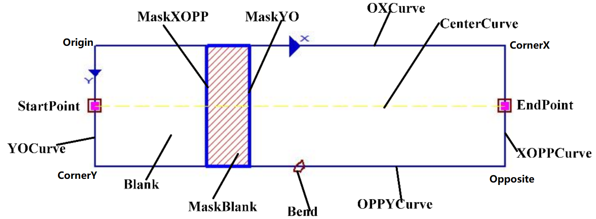
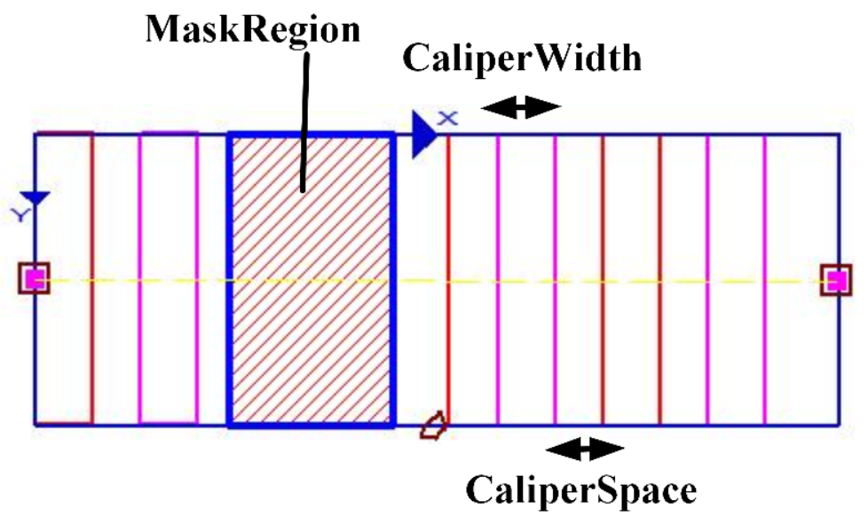

Đại diện cho lớp điều khiển hình chữ nhật có thể thay đổi trong giao diện người dùng (GUI), tức là các đối tượng hình học hiển thị trên giao diện, có thể chuyển đổi thành hình chữ nhật hoặc đoạn hình vành khăn. Nếu cần lấy bốn điểm góc của hình chữ nhật có thể thay đổi này thì có thể dùng hàm thành viên GetRectEx để lấy đối tượng scRectEx, sau đó sử dụng scRectEx để lấy các điểm góc. Ví dụ như vùng đo chiều rộng cạnh trong công cụ đo chiều rộng cạnh (tương ứng loại đo chiều rộng cạnh là đường thẳng trong thanh thuộc tính) hoặc vùng đo chiều rộng cạnh hình tròn (tương ứng loại đo chiều rộng cạnh là hình tròn trong thanh thuộc tính).


| Phân loại | Tên giao diện | Mô tả giao diện |
|---|---|---|
| Khởi tạo | scGuiRectEx | scGuiRectEx(dof=15): Hàm khởi tạo mặc định. |
| Hàm | GetSearchDirectionDOF | Lấy bậc tự do của hướng tìm kiếm. |
| GetRectEx | Lấy hình chữ nhật có thể thay đổi. | |
| SetRectEx | Thiết lập hình chữ nhật có thể thay đổi. | |
| GetRectExCaliper | Lấy thước đo của hình chữ nhật có thể thay đổi. | |
| SetRectExCaliper | Thiết lập thước đo cho hình chữ nhật có thể thay đổi. | |
| GetCaliperWidth | Lấy độ rộng của thước đo. | |
| SetCaliperWidth | Thiết lập độ rộng của thước đo. | |
| GetCaliperSpace | Lấy khoảng cách giữa các thước đo. | |
| SetCaliperSpace | Thiết lập khoảng cách giữa các thước đo. | |
| GetCaliperID | Lấy ID thước đo. | |
| SetCaliperID | Thiết lập ID thước đo. | |
| GetSearchDirection | Lấy hướng tìm kiếm của thước đo. | |
| SetSearchDirection | Thiết lập hướng tìm kiếm của thước đo. | |
| GetCaliperNum | Lấy số lượng thước đo. |
Chức năng: Khởi tạo đối tượng scGuiRectEx, mặc định bậc tự do của hướng tìm kiếm là 15, có thể không cần truyền tham số, chỉ cần dùng scGuiRectEx() là đủ.
Tham số: Không có.
Giá trị trả về: Không có.
Chức năng: Lấy bậc tự do của hướng tìm kiếm.
Tham số: Không có.
Giá trị trả về: Bậc tự do của hướng tìm kiếm, kiểu số nguyên.
Chức năng: Lấy hình chữ nhật có thể thay đổi.
Tham số: Không có.
Giá trị trả về: Hình chữ nhật có thể thay đổi, kiểu scRectEx.
Chức năng: Thiết lập hình chữ nhật có thể thay đổi.
Tham số:
Giá trị trả về: Không có.
Chức năng: Lấy thước đo của hình chữ nhật có thể thay đổi.
Tham số: Không có.
Giá trị trả về: Thước đo hình chữ nhật, kiểu scRectExCaliper.
Chức năng: Thiết lập thước đo của hình chữ nhật có thể thay đổi.
Tham số:
Giá trị trả về: Kiểu bool, cho biết thiết lập có thành công hay không.
Chức năng: Lấy độ rộng của thước đo.
Tham số: Không có.
Giá trị trả về: Độ rộng của thước đo, kiểu số nguyên.
Chức năng: Thiết lập độ rộng của thước đo.
Tham số:
Giá trị trả về: Kiểu bool, cho biết thiết lập có thành công hay không.
Chức năng: Lấy khoảng cách giữa các thước đo.
Tham số: Không có.
Giá trị trả về: Khoảng cách giữa các thước đo, kiểu số nguyên.
Chức năng: Thiết lập khoảng cách giữa các thước đo.
Tham số:
Giá trị trả về: Kiểu bool, cho biết thiết lập có thành công hay không.
Chức năng: Lấy ID của thước đo.
Tham số: Không có.
Giá trị trả về: ID của thước đo, kiểu số nguyên.
Chức năng: Thiết lập ID của thước đo.
Tham số:
Giá trị trả về: Kiểu bool, cho biết thiết lập có thành công hay không.
Chức năng: Lấy hướng tìm kiếm của thước đo.
Tham số: Không có.
Giá trị trả về: Hướng tìm kiếm, kiểu số nguyên.
Chức năng: Thiết lập hướng tìm kiếm của thước đo.
Tham số:
Giá trị trả về: Kiểu bool, cho biết thiết lập có thành công hay không.
Chức năng: Lấy số lượng thước đo.
Tham số: Không có.
Giá trị trả về: Số lượng thước đo, kiểu số nguyên.
Không có
```python ROI_Line = GvTool.GetToolData("边检测工具_011.检测区域") print(type(ROI_Line))
rectex = ROI_Line.GetRectEx() po = rectex.GetOriginPoint() Px = rectex.GetCornerPx() Py = rectex.GetCornerPy() Popp = rectex.GetCornerPopp()
print(po.GetX(),po.GetY()) print(Px.GetX(),Px.GetY()) print(Py.GetX(),Py.GetY()) print(Popp.GetX(),Popp.GetY()) ```